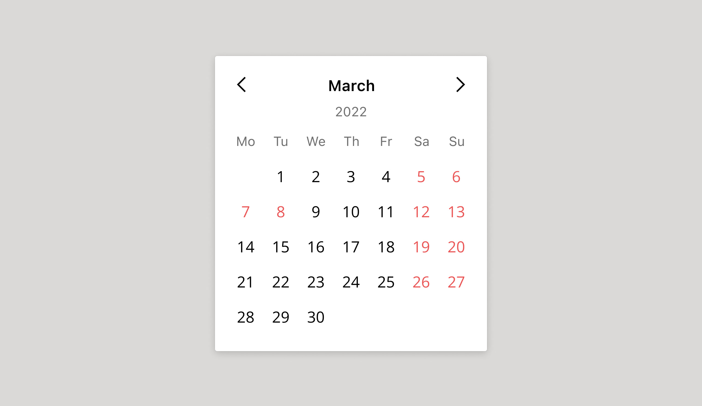
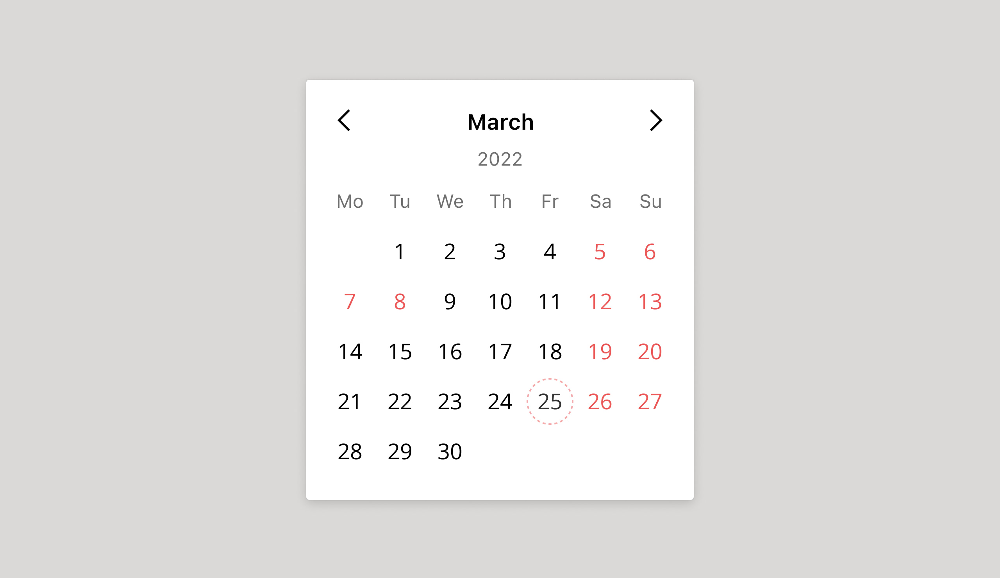
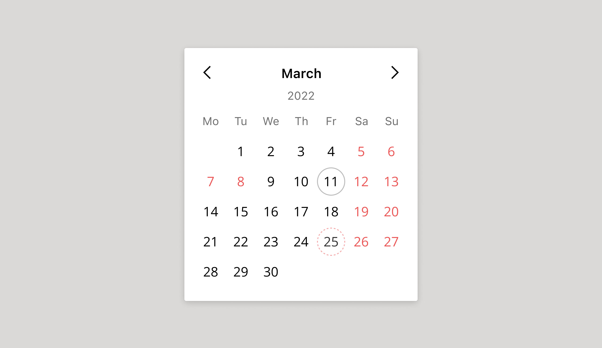
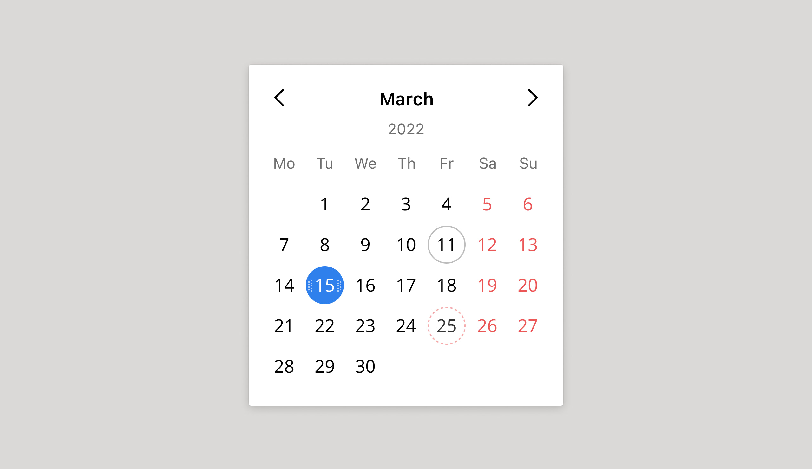
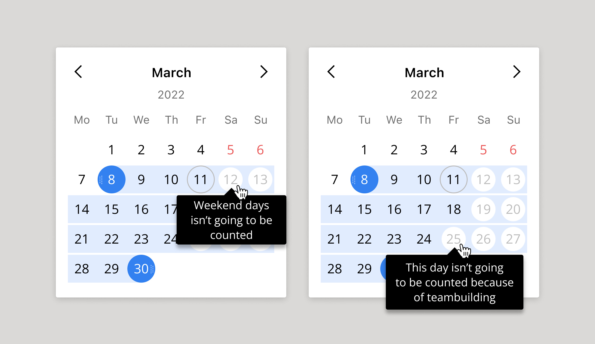

<!DOCTYPE html>
<html>
  <head>
    <meta charset="utf-8"/>
    <meta name="viewport" content="width=device-width, initial-scale=1.0"/>
    <meta property="og:type" content="article"/>
    <meta property="og:title" content="Почему дизайнерам компонентов нужно доплачивать за вредность • Артём Самсонов • Продуктовый дизайнер"/>
    <meta property="og:description" content="Рассказываю на примере компонента «Календарь», как типичная на первый взгляд задача способна довести продуктового дизайнера до слёз."/>
    <meta property="og:image" content="http://artemsamsonov.com/img/default.jpg"/>
    <link href="https://fonts.googleapis.com/icon?family=Material+Icons" rel="stylesheet"/>
    <link rel="stylesheet"/><!-- Yandex.Metrika counter --> <script type="text/javascript" > (function(m,e,t,r,i,k,a){m[i]=m[i]||function(){(m[i].a=m[i].a||[]).push(arguments)}; m[i].l=1*new Date();k=e.createElement(t),a=e.getElementsByTagName(t)[0],k.async=1,k.src=r,a.parentNode.insertBefore(k,a)}) (window, document, "script", "https://mc.yandex.ru/metrika/tag.js", "ym"); ym(88097279, "init", { clickmap:true, trackLinks:true, accurateTrackBounce:true, webvisor:true }); </script> <noscript><div></div></noscript> <!-- /Yandex.Metrika counter -->
    <title>Почему дизайнерам компонентов нужно доплачивать за вредность • Артём Самсонов • Продуктовый дизайнер</title>
  <link href="./css/style.bundle.css" rel="stylesheet"></head>
</html>
<body class="body_light">
  <header class="header header_light">
    <div class="header__logo"><a href="index.html">Артём Самсонов</a></div>
  </header>
  <div class="content">
    <div class="article">
      <section>
        <h1>Почему дизайнерам компонентов нужно доплачивать за вредность</h1>
        <p class="article__annotation">Рассказываю на примере компонента «Календарь», как типичная на первый взгляд задача способна довести продуктового дизайнера до слёз.</p>
        <div class="article__list">
          <h4>Содержание статьи</h4><a href="#intro">Предисловие</a><a href="#step1">Этап 1. Делим дни по типам</a><a href="#step2">Этап 2. Добавляем точку отсчёта</a><a href="#step3">Этап 3. Проектируем взаимодействия</a><a href="#step4">Этап 4. Презентуем разработчикам. Обтекаем</a><a href="#step5">Этап 5. Испытываем компонент</a><a href="#step6" id="intro">Вы ещё живы?</a>
        </div>
      </section>
      <section>
        <h2>Предисловие</h2>
        <p>Настало время рассказать, почему я считаю дизайн компонентов одной из самых сложных задач в продуктовом дизайне.</p>
        <p>В качестве примера мы возьмём календарь компании Wrike, где я отвечал за дизайн-систему. С помощью этого календаря пользователи Wrike отмечали время, которое они потратили на те или иные задачи. Однако, его могли использовать и в других частях продукта для самых разнообразных целей.</p>
        <p>Конечно, первым делом мы должны собрать требования с заинтересованных в компоненте команд и узнать потребности пользователей. Но сегодня я не хочу углубляться в подготовительный этап. Давайте сфокусируемся именно на проектировании.</p>
        <p>Начнём с максимально примитивной заготовки. Вот она:</p>
        <p class="article__image" id="step1"><a href="../../img/calendar-01.jpg" target="_blank"></a></p>
      </section>
      <section>
        <h2>Этап 1. Делим дни по типам</h2>
        <p>Сразу же учтём простой нюанс. Не все знают, что в США и Великобритании неделя начинается с воскресенья. Нужно обязательно показать это в макете и указать в спецификации для разработчиков:</p>
        <p class="article__image"><a href="../../img/calendar-02.jpg" target="_blank"></a><span class="article__image-caption">Слева — календарь для России, справа — вариант для США и Великобритании</span></p>
        <p>Давайте возьмём привычный нам календарь, где неделя начинается с понедельника. Первым делом отделим выходные дни от рабочих традиционным красным цветом:</p>
        <p class="article__image"><a href="../../img/calendar-03.jpg" target="_blank"></a></p>
        <p>Наши пользователи просили добавить ещё и
          <strike>нерабочие</strike> занятые дни. Чаще всего это дни, когда сотрудник уехал в командировку, выступает на конференции или гуляет на корпоративе. Формально человек потратил время на рабочие обязанности, но для команды его ресурсы были недоступны.
        </p>
        <p>Что ж, превращаем последнюю пятницу месяца (25 марта) в занятый день — корпоратив:</p>
        <p class="article__image"><a href="../../img/calendar-04.jpg" target="_blank"></a><span class="article__image-caption">Рабочие дени чёрные, выходные — красные, а занятый день помечен алым пунктиром</span></p>
        <p id="step2">С типами дней закончили. Двигаемся дальше.</p>
      </section>
      <section>
        <h2>Этап 2. Добавляем точку отсчёта</h2>
        <p>Для большинства людей время линейно. Значит, в нашем календаре существует три отрезка: прошлое, сегодняшний день, будущее.</p>
        <p>Давайте добавим на календарь точку отсчёта. Обведём сегодняшний день, чтобы юзер не прилагал лишние когнитивные усилия каждый раз, когда открывает компонент:</p>
        <p class="article__image"><a href="../../img/calendar-05.jpg" target="_blank"></a><span class="article__image-caption">Судя по календарю, сегодня 11 марта. Мы сомневались в этом визуальном решении, по пользователи быстро к нему привыкли</span></p>
        <p>В некоторых случаях нам придётся блокировать прошедшие дни — например, когда пользователь выбирает дату для zoom-митинга. Мы ведь не можем назначить митинг на вчера, верно?</p>
        <p class="article__image"><a href="../../img/calendar-06.jpg" target="_blank"></a><span class="article__image-caption">Прошедшие дни недоступны для выбора</span></p>
        <p>Итак, мы разделили дни по двум признакам. Дни могут быть рабочими, выходными и занятыми. Также они бывают прошедшими, настоящими и будущими.</p>
      </section>
      <section>
        <p id="step3">Теперь давайте подумаем, как пользователи будут взаимодействовать с компонентом.</p>
        <h2>Этап 3. Проектируем взаимодействия</h2>
        <h4>Наводим на даты</h4>
        <p>Как поведёт себя ячейка календаря, если мы наведём курсор на сегодняший день? А на будущий? Создаём общий стиль для обоих случаев:</p>
        <p class="article__image"><a href="../../img/calendar-07.jpg" target="_blank"></a><span class="article__image-caption">Слева hover-состояние для сегодняшнего дня, справа — для будущего</span></p>
        <p>Пользователь может навести курсор и на недоступные дни. Тогда лучше не молчать, а объяснить ему, почему он не сможет выбрать данную дату:</p>
        <p class="article__image"><a href="../../img/calendar-08.jpg" target="_blank"></a></p>
        <h4>Выбор дат</h4>
        <p>А как пользователь будет выбирать нужный ему день? Это достаточно просто:</p>
        <p class="article__image"><a href="../../img/calendar-09.jpg" target="_blank"></a><span class="article__image-caption">Пользователь выбрал 15 марта</span></p>
        <p>Часто пользователям нужно выбрать не конкретный день, а период. Например, отпуск или срок выполнения задачи:</p>
        <p class="article__image"><a href="../../img/calendar-10.jpg" target="_blank"></a><span class="article__image-caption">Пользователь собирается делать задачу 4 дня</span></p>
        <p>Большие задачи длятся неделями, проекты — месяцами. В таком случае в периоды неизбежно попадают выходные и занятые дни. Их нужно подсвечивать внутри периода. Вот пример, в который попали не только субботы и воскресенья, но и наш пятничный корпоратив:</p>
        <p class="article__image"><a href="../../img/calendar-12.jpg" target="_blank"></a><span class="article__image-caption">Из шестнадцати выделенных дней пользователь сможет посвятить задаче только одиннадцать</span></p>
        <p>В выбранный период может так же попасть сегодняшний день (11 марта). Для него тоже придётся использовать отдельный стиль:</p>
        <p class="article__image"><a href="../../img/calendar-13.jpg" target="_blank"></a></p>
        <p>Думаете, это всё? Как бы не так! Пользователь может выделить период, а затем наводить на выделенные дни мышкой. Например, чтобы понять, почему некоторые из них «подсвечены белыми кружочками».</p>
        <p>И нам обязательно нужно это объяснить:</p>
        <p class="article__image" id="step4"><a href="../../img/calendar-14.jpg" target="_blank"></a></p>
      </section>
      <section>
        <h2>Этап 4. Презентуем разработчикам. Обтекаем</h2>
        <p>Как только вы решите, что ваш компонент готов для разработки, отнесите его на PBR и покажите команде. На этой замечательной встрече ваш концепт развалят своими едкими вопросами разработчики (за что вы начнёте их любить и ненавидеть одновременно).</p>
        <p>Вот пара вопросов, которые нанесут серьёзный урон вашей репутации продумана.</p>
        <h4>А что если сегодняшний день — выходной?</h4>
        <p>Действительно, мы забыли добавить ещё один стиль для таких случаев:</p>
        <p class="article__image"><a href="../../img/calendar-16.jpg" target="_blank"></a><span class="article__image-caption">Сегодня суббота, 12 марта. Пожалуйста, отдохните</span></p>
        <p>Не успели мы ответить на первый вопрос, как руку тянет Principal Java Developer:</p>
        <h4>«А что если пользователя попросили поработать в выходные? Как ему затрекать время?»</h4>
        <p id="step5">Чтобы окончательно не расплавиться, мы передадим эту проблему команде раздела Timetracking. Они разработают для таких случаев персональные производственные календари. Излишне усложнять компонент тоже не стоит.</p>
      </section>
      <section>
        <h2>Этап 5. Испытываем компонент</h2>
        <p>Отмучавшись два-три PBR-а и поправив все неучтённые кейсы, пора примерять наш компонент на самые разные ситуации. Зачем? Всё просто: компонент должен быть универсальным и обладать запасом гибкости.</p>
        <p>Например, представьте, что ваш календарь будут использовать координаторы для покупки авиабилетов сотрудникам. В первом календаре координатор указывает дату вылета. В втором — дату возвращения. Вернуться раньше, чем улететь человек не может. Значит, наш календарь теоретически должен уметь передавать данные вовне:</p>
        <p class="article__image"><a href="../../img/flights-example.gif" target="_blank"></a></p>
        <p>А вот пример для бронирования корпоративной квартиры. Прошлые дни недоступны. Ближайшие 10 дней заняты. Заселиться можно только с 21 марта:</p>
        <p class="article__image" id="step6"><a href="../../img/calendar-23.jpg" target="_blank"></a><span class="article__image-caption">Теоретически можно объединить недоступные дни в колбаску-период, но лучше добавлять функции только когда они реально потребуются</span></p>
      </section>
      <section>
        <h2>Вы ещё живы?</h2>
        <p>Зря. Потому что мы не проработали и половины нюансов. Дизайнеру компонентов предстоит продумать как минимум:</p>
        <ul>
          <li><span>Выделение периодов длиной несколько месяцев (например, 1.01 – 1.05)</span></li>
          <li><span>Цветовой контраст элементов для пользователей с нарушениями зрения (не все различают цвета корректно)</span></li>
          <li><span>Клавиатурную навигацию для людей с ограниченными возможностями (не все могут кликать мышкой)</span></li>
          <li><span>Позиционирование календаря (куда ему выпадать, если снизу не хватает места?)</span></li>
          <li><span>Отображение календаря на экранах мобильных</span></li>
          <li><span>Выделение дат пальцем, а не курсором</span></li>
        </ul>
        <p>Если я начну расписывать каждый из этих пунктов, мы закончим к утру.</p>
        <p>Так что, ребята, берегите продуктовых дизайнеров. Они седеют ради вашего удобства.</p>
      </section>
    </div>
  </div>
<script type="text/javascript" src="./js/bundle.js"></script></body>